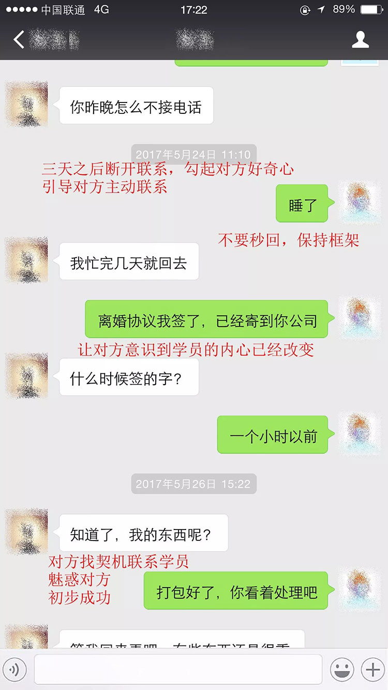
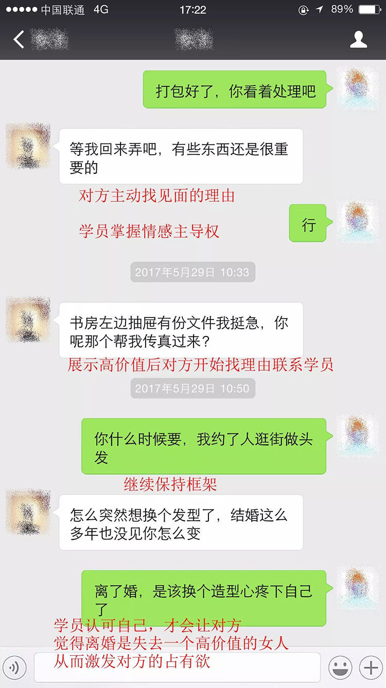
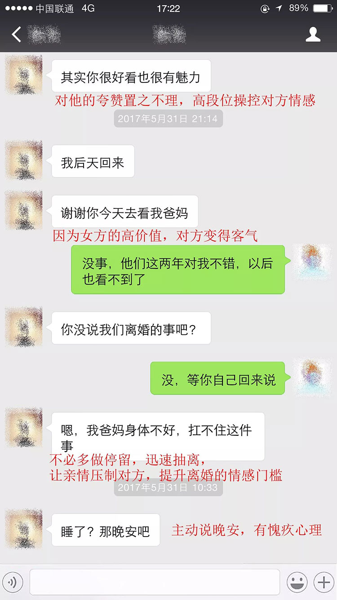

当婚姻变成了两个人的枷锁，还能维持多久？在此之前，我一度以为我会因为关系破裂而离婚，然而在我写下这篇文章的时候，内心却是幸运的，原因在于，我的婚姻从两个月前开始被改变。
认识陈浩的时候我二十五岁，他是我所有追求者当中最用心的，追我一年半之后，我决定就是他了，说他把我宠上了天都不为过，工作出现问题的时候，陈浩会尽力帮我解决，半夜不舒服的时候，他也是随叫随到。
在他无微不至的照顾之下，我同意了他的求婚。
我没想到的是，结婚才两年不到，我和陈浩就腻了。
矛盾爆发是我不止一次在他的裤子口袋里发现了奢侈品的收据，随后更是发现他在家的时候喜欢避开我接电话，我越发肯定那些奢侈品是他送给了别的女人。
我直接了当地跟他摊牌，他承认了在外面有别人。他说，那个女人会帮他做饭洗衣，甚至愿意给他生孩子，让他有一种家的归属感。而我这些年像个大小姐一样需要他处处呵护，脾气差到让他受不了，如同婚前一样苛刻。
陈浩的背叛让我变的歇斯底里，彻底失去了理智。就算离婚，我也要让那个女人什么都得不到，我去他的公司闹，破坏他所有的社交，当陈浩终于变成了所有人眼中的渣男，他也把我从家里赶了出来。
为了逃离我的纠缠，陈浩出差了，删除了我所有的联系方式，留下了一张签了字的离婚协议。我不知道他去了哪里，干脆就请假在家等他回来，过得非常颓废，好友吟吟实在看不下去了，安慰我一番发现没什么作用，就向我推荐了姬乃院老师V信：（yidianlinghcm55555 ），让我寻求专业情感导师的帮助。
姬乃院 分 析
在姬乃院老师看来，我已经形成了边缘型人格，极度缺乏安全感，当我发现陈浩有外遇的时候第一时间想到的是僵化这段关系让他感觉到离开我会遭到报复从而回心转意，却没想到会让他害怕我，一味退缩。
姬乃院老师指出：男人在追求女生的时候投入情感和物质，为的是获得稳定的情感寄托，而男人得到女人之后会对之前的付出索要一定的回报，这表现在陈浩在婚后会希望我能做好一个妻子的本分，能把家里收拾干净,让他体验家庭的温馨。
正因为这些都是我没做到的，所以他才会在别的女人身上索取我给不了的感觉，甚至不惜代价地离婚也更愿意要一个工作能力不如我的女人。
离婚并不是因为失去了价值，而是因为我不明白婚前婚后男人心理，才会感受到婚姻里亲密关系的落差。
可即便我知道了我和陈浩的问题所在，也不知道怎么去修复我们的婚姻，陈浩对我已经有一种恐惧心理，抵抗情绪很严重，好在姬乃院老师帮我制定了详细的婚姻修复方案。(姬乃院老师V信：yidianlinghcm55555 ）
问 题 解 决
从网上看到的修复婚姻的步骤都是要断联、冷处理，给自己一个时间提升，让对方降低心理防线，让他对感情进入重新考察期。姬乃院老师知道我有这个想法，立马就否定了我，断联只会让他产生抵抗心理，从而更想离婚，而我们原有的情感基础会呈现一种消耗的状态。
一方对另一方的认知一旦产生了，就会遵循内心的想法，从各方面说服自己，而我如果一直跟他联系，在他的潜意识里就会对我产生一种预期，保持他对我认知的时刻刷新。
老师的分析都是专人专案，大众的挽回方法并不适合所有的情感问题，看到姬乃院老师胸有成竹的样子，我感觉吃下了一颗定心丸。
第一阶段：关系破冰、解除单方面断联
照着姬乃院老师的方法，我先解除断联状态，当天给他发了信息，几个小时后他主动加了我V信，老师让我主动提起离婚的事，目的是让他看到我目前的态度，对我放下防备，让他感觉到我已经死心，不会再缠着他，也方便后续的沟通。
我以为会一直保持这个状态等他回来，没想到姬乃院老师在三天后就不让我给他发信息，我正觉得奇怪，我要的只是刷新他对我的认知，游离压力中心。
第二阶段：关系边界建立、加大亲职投入
我之所以会大吵大闹，主要原因还是缺乏边界认知，不顾男人的面子，为了让他感觉到我的变化，姬乃院老师让我先从他的视觉体验上改变自己，从头到脚都进行了一番提升之后，我把家里格局做了一些修改，包括卧室的家居摆放。
另外我趁他出差，回了趟乡下老家看公公婆婆，按照老师的方法，我当着婆婆的面，给他打了一个电话，婆婆很开心，为我说了不少好话，无意中让我成为婆婆的期待，在亲情的期待上压制他要离婚的想法。
第三阶段：建立自我框架，提升离婚门槛
我一直不知道框架是什么，老师给我解释之后，我才知道，让男人俯首称臣的婚姻是不对的，这不是婚姻里的自我框架。
我从婆婆那里回来之后，我没接到他的电话，后来给我发了几条消息，我正愁不知道怎么回复他，老师告诉我，正好可以借着婆婆的期待引导他重温我们的婚姻关系。
照着老师的指导，我回复了他。

他怕我扔掉了他的东西，用这个作为理由，回来可以见我。

继续保持自己的框架，让他知道我已经不在乎他了，只有面临真正的失去，他才会理性思考离婚的代价，我也正是以此提高他离婚的门槛。

老师说他已经开始慌了，找一些理由阻止我散发要离婚的消息，怕这件事影响太大，斩断自己的退路，此时我已经完全不害怕他要离开了，我已经掌握了婚姻的主动权
除此之外，我还去附近的城市玩了一圈，经过老师教我的提升后，回头率都高了好多，老师让我发一些全身照的朋友圈，让他看到我的正能量。
陈浩回家那天，我正好在家里收拾，他看到我有点发愣，我很温柔地走近他，接过他的行李。没走几步，他突然就抱住了我，表现得很激动，根据姬乃院老师的关系重建步骤来看，我知道他已经开始对我有新的认知，并且意识到婚姻当中的一些错误，也看到了我的高价值，开始慢慢地弥补我。
如果这么原谅他，那我未免显得太廉价，只有进行一番艰难的考验才能再次把自己交给他，往后的半个月，姬乃院老师帮我策划了不少考验，让我确信，他是回到我身边了。幸好我遇见了姬乃院老师，我的婚姻才得以继续。
从那天以后，陈浩对我多了很多耐心，无论我什么时候下班，他都会去接我。一段时间之后，我们迎来了一个小生命的发芽。
这就是我的故事，一段濒临破碎的婚姻被修复的故事，真的非常感谢姬乃院老师（ V信：yidianlinghcm55555 ）
完